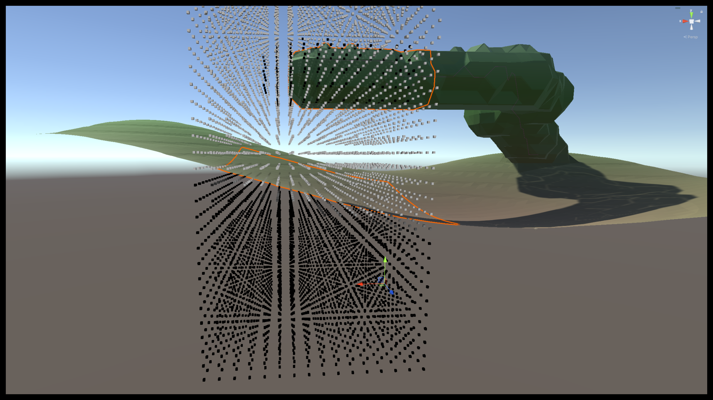
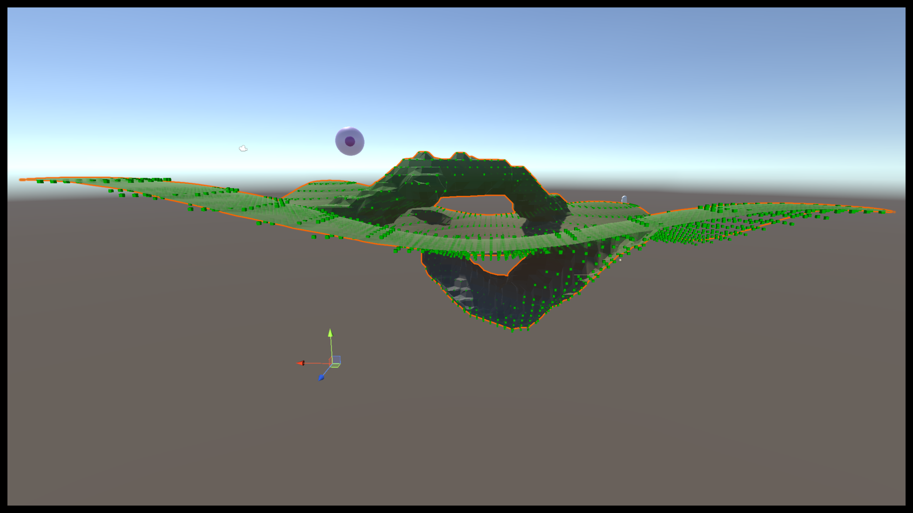

Marching Cube Terrain With A* Pathfinding
Academic Project
Details
- 3 Person Computer Science Group
- Unity Engine
- March 2023 - April 2024
Project Details
- Implemented the Marching Cubes algorithm with 3D Perlin noise in order to generate smooth, realistic terrain meshes featuring natural-looking landscapes with rolling hills in a voxel-based environment.
- Developed real-time terrain modification features, allowing users to alter the terrain by adding or removing voxels, with changes reflected in the resulting mesh.
- Introduced chunk-based terrain generation to handle large environments efficiently by dividing the terrain into smaller, manageable grids.
- Designed a traversability map to define which terrain areas are navigable by AI agents, using voxel data from the Marching Cubes algorithm and our definitions of what is traversable.
- Applied A* pathfinding to allow AI agents to navigate the dynamically generated terrain, with paths recalculated after terrain modifications to ensure optimal routes.
- Created tools that allow the traversability map and the agent path to be viewable using Unity's Gizmos system.
Project Screenshots

Visualization of the perlin noise and the modified heightmap using Unity Gizmos within a chunk.

Visualization of the A* traversability map across each chunk using Unity Gizmos.

Visualization of the path for the agent to follow in pink moving along the vertices selected using A*.

Visualization of both the traversability map and the completed A* path.
Project Outcome
Successfully demonstrated a proof of concept that integrates Marching Cubes terrain generation with A* pathfinding, showcasing its potential for creating dynamic, interactive agents within environments for games.